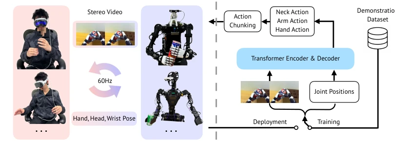
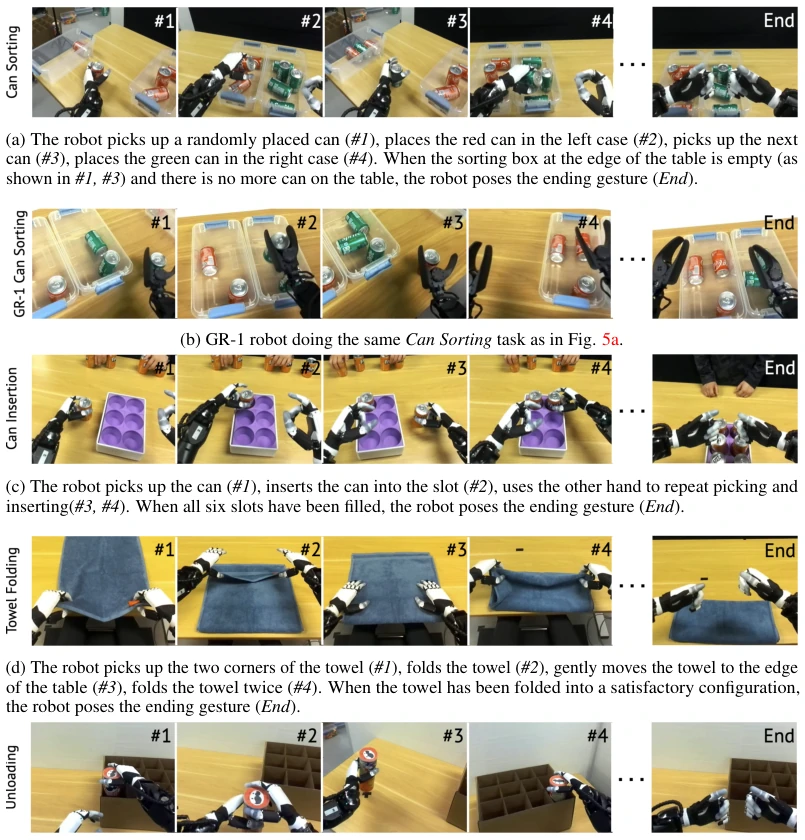
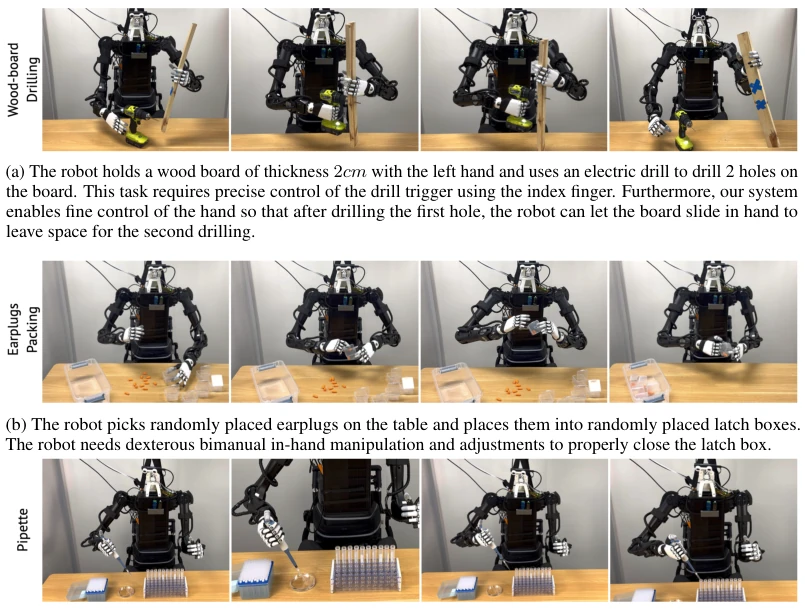
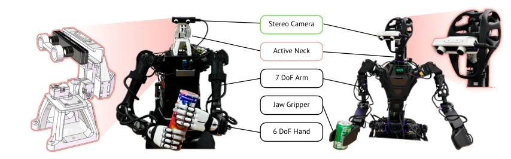

Open-TeleVision: Teleoperation with Immersive Active Visual Feedback
Xuxin Cheng, Jialong Li, Shiqi Yang, Ge Yang, Xiaolong Wang abspdf
论文点评Review
这篇 Open-TeleVision 算是把 VR 遥控玩出了新高度，但“沉浸式”三个字别被忽悠了。核心就是让机器人头跟着人动，再配上 VR 看立体视频，确实比传统单目或固定视角强，尤其是精细操作。不过，Apple Vision Pro 加人形机器人，成本劝退。没有力反馈，摸不到东西，全靠眼睛猜深度，遇到软物体估计还是得靠运气。所谓的“沉浸式”更多是视觉上的，手还是空的。虽然开源了，但离真正“传心术”还差口气，毕竟触觉缺失是硬伤。远程操作虽酷，但网络延迟和带宽也是隐忧，实际落地还得看稳定性。
This Open-TeleVision system has indeed elevated VR remote control to a new level, but do not be misled by the three words "immersive". The core is making the robot head follow human movement, paired with VR for viewing stereo video, which is indeed superior to traditional monocular or fixed views, especially for fine manipulation. However, combining Apple Vision Pro with a humanoid robot incurs prohibitive costs. Without force feedback, one cannot touch objects, relying entirely on eyes to guess depth; encountering soft objects likely still depends on luck. The so-called "immersive" aspect is mostly visual, while the hands remain empty. Although open-sourced, it is still short of true "telepathy", as the lack of tactile feedback is a fatal flaw. While remote operation is cool, network latency and bandwidth are also concerns; actual deployment depends on stability.
Imitation learning relies on high-quality data, and teleoperation is key. Existing systems like ALOHA [12] are precise but require co-location; OpenTeach [2] etc. rely on monocular or fixed views, prone to occlusion and lacking depth perception, making fine manipulation difficult. Remote teleoperation is even more of a pain point; existing solutions mostly do not support multi-finger dexterous hands or require custom hardware. This paper aims to solve remote, immersive, high-precision teleoperation problems, specifically eliminating occlusion through active vision, enhancing spatial understanding using stereo vision, supporting cross-regional collaboration, and providing a new paradigm for large-scale data collection.
Figure 1: Autonomous and teleoperated sessions using our setup. a-e: robots executing long- horizon precision-sensitive tasks autonomously. f-j: robots executing fine-grained tasks with our immersive teleoperation system. a: unloading, in-hand passing; b: H1 can-sorting; c: GR-1 can- sorting; d: can-insertion; e: towel folding; f; earplugs packing; g: drilling; h:pipetting; i: two operators teleoperate two robots interactively. The operator of H1 robot is at Boston while both robots and GR-1 operator are at San Diego (approximately 3000 miles away). j: interactions with humans.
The system is divided into perception and control paths. At the perception end, the robot head is equipped with an active gimbal and stereo camera; head movement follows the operator, transmitting 60Hz stereo video to VR in real-time. At the control end, VR captures hand/head pose; the server solves robot arm joints via IK, utilizing dex-retargeting to map dexterous hands/grippers. At the learning end, ACT architecture is adopted, visual backbone replaced with DinoV2, input is stereo images and proprioception, output is action chunk sequence. Overall implementation achieves low-latency closed loop from VR end to robot end, supports remote internet transmission, compatible with different robot hardware. Specifically, hand control uses a vector optimizer to solve size differences, arm control uses CLIK algorithm to ensure stability, neck movements are directly mapped, ensuring operator intent is transmitted losslessly.

Figure 2: Teleoperated data collection and learning setup. Left: our teleoperation system. VR devices stream the hand, head, and wrist poses to the server. The server retargets the human poses to the robot and sends joint position targets to the robot. Right: we train an imitation policy for each task with action chunking transformer. The transformer encoder captures the relationship of image and proprioception tokens and the transformer decoder outputs action sequences of a certain chunk size.

Figure 5: Data collection using H1 on four tasks. Each row represents one task. At the end of each task, the operator postures to the same ending gesture to signify the successful completion of one demonstration. Then our system will stop recording data. We do not crop the ending gesture from our dataset. The learned policy can successfully react to ending conditions.
Tested on H1 and GR-1 with four tasks (can classification/insertion, folding, unloading). Baseline comparison with ResNet18 and monocular input. Results show DinoV2 + stereo input significantly improves success rate, e.g., classification task H1 reaches 92%. User study confirms stereo vision reduces operation time and increases success rate. Ablation experiments show active vision is 2 times faster than wide-angle static view for training/inference, and has better generalization. Remote trans-ocean operation video validates system feasibility. Additionally, for soft folding and fine insertion tasks, stereo depth information is crucial for force control assistance; monocular solutions have high failure rates in such tasks.
Figure 7: Comparison between wide-angle lenses and cropped views. Left: H1 Can Sorting. Right: Unloading. Wide angle images are of resolution 1280x720 and have a 102°(H) x 57°(V) field-of-view. Cropped images are cropped from the bottom middle from the original wide-angle images, and are of resolution 640x480. Red marks are the points of interests (PoIs) for the tasks. For Can Sorting, the PoIs are the bin with cans to be sorted, pick location, coke bin and sprite bin. For Unloading, the PoIs are tube slot, in-hand passing, and the drop location.Figure 6: Distribution of can placements. Left: The cans are placed in a f 4×4 grid. Right: number of successful pickings heatmap with 5 trials at each location.

Figure 8: More teleoperation experiments.These experiments aim to show our system’s reliability and precision for a wide variety of tasks.Figure 9: Our system enables cross-country teleoperation over the internet. The operator at Boston, USA can operate a robot at San Diego, USA (approximately 3000 miles away). The robot and operator pictures are flipped left to right for better illustration.
其他图片Other Figures

Figure 4: Reference design of Open-TeleVision on two types of hardware. Left: Unitree H1 [19] with 6 DoF Inspire [22] hands. The head contains yaw and pitch motors. Right: Fourier GR-1 [20] with jaw gripper. The active neck is from the manufacturer with yaw roll and pitch motors.